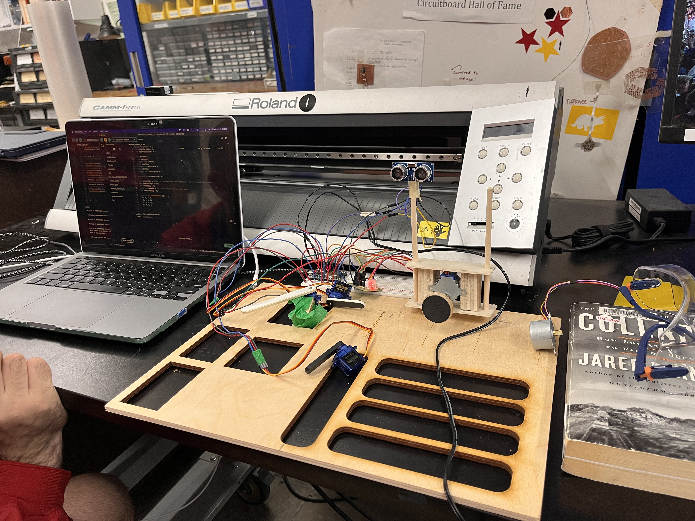

<div class="textcontainer">
<p class="margin"></p>
<h3>Final Project: </h3>
<h4></h4>
<p class = "margin"></p>
Initially I was hoping my final project would help me read while I eat by turning the pages when a sensor detects my hand's presence. I was also looking to make a product that could help those with mobility problems or limited mobility who might have trouble with reading. My initial idea for a book page turner would be one with two sensors that allowed me to turn both forwards and backwards. I also hoped it would be able to detect a constant presence in front of the sensor that would cause several pages to be turned. Time unfortunately did not allow me to incorporate all of these aspects, but I did end up with a simple version of it to build up upon in the future.
<p class = "margin"></p>
<p class = "margin"></p>
<p class = "margin"></p>
The bill of materials:
Ultrasonic sensor, Wood (base), DC motor, 3D printed holders for sensor and servo, and a lot of wires.
<p class = "margin"></p>
<p class = "margin"></p>
After completing an MVP of this project that incorporated an arduino motor and two servos that would allow me to turn the page and adjust how long the motor would be on according to my hand presence, I realized a couple things: working with one or more servos was tough because of the coding-- especially if I wanted them to complete functions together, having a DC motor continuously turn then flipping what comes up would result in inconsistent pages being turned, especially because some pages would stick together, having the time the motor turns depend on a human's hand motion was unreliable since you would have to guess how much time was needed to turn the amount of pages you wanted, the motor position would have to be able to move along the z-axis since after turning several pages, the height of the pages would be different, the servo that had to hold the pages down had to be longer in case pages didn't come all the way down, and the sensor needed to be placed in a position where it could not be triggered by other motions easily.
<p class = "margin"></p>
<p class = "margin"></p>
For the integration iteration, I added in a stepper motor for more control for every page, and I added in an elevator component for the stepper motor so it could change based on the page height. Below was my integration iteration.
<p class = "margin"></p>
<p></p>
<p class = "margin"></p>
For the final, I touched everything up, created 3D printed stands and components to ensure stability, and a box to organize my wiring.
<p class = "margin"></p>
<p class = "margin"></p>
Below is my video: (I wanted to add a huge thank you to you all at the end but the sound wouldn't come up, so I have two versions, one with the thank you without sound and one with, either way thank you all so much!)
<p class = "margin"></p>
<p class = "margin"></p>
<iframe width="560" height="315" src="https://www.youtube.com/embed/pqZ2R8VbkDQ?si=4ROTj3XXrtrgihkA" title="YouTube video player" frameborder="0" allow="accelerometer; autoplay; clipboard-write; encrypted-media; gyroscope; picture-in-picture; web-share" referrerpolicy="strict-origin-when-cross-origin" allowfullscreen></iframe>
<p class = "margin"></p>
<iframe width="560" height="315" src="https://www.youtube.com/embed/8AlnayqBO14?si=TEq1_RYvHrstenBR" title="YouTube video player" frameborder="0" allow="accelerometer; autoplay; clipboard-write; encrypted-media; gyroscope; picture-in-picture; web-share" referrerpolicy="strict-origin-when-cross-origin" allowfullscreen></iframe>
}
</script>
</html>
<pre><code>
#include <ESP32Servo.h>
const int motorPins[4] = {12, 14, 27, 26};
const int trigPin = 25;
const int echoPin = 33;
int turnerServoPin = 2;
int holderServoPin = 16;
int pagePressServoPin = 4;
long duration;
float distance;
unsigned long current;
float prevTime;
unsigned long stopTime = 0;
bool motorStop;
unsigned long prevStepTime = 0;
unsigned long stopPageTurn = 0;
bool pageLifting = false; //if scanned then turn on to tell it not to recognize hand again
bool pageTurning = false;
int currentStep = 0;
const int stepDelay = 8; // milliseconds between motor steps
long pageTurnDelay = 0;
const int fullStepSequence[4][4] = {
{1, 0, 0, 0},
{0, 1, 0, 0},
{0, 0, 1, 0},
{0, 0, 0, 1}
};
class pageTurnerServos{
Servo servo;
int pos;
int increment;
int updateInterval;
unsigned long lastUpdate;
int startPos;
int endPos;
public:
pageTurnerServos(int interval, int start, int target){
updateInterval = interval;
increment = -1;
startPos = start-1;
pos = startPos;
endPos = target;
lastUpdate = millis();
}
void Attach(int pin){
servo.attach(pin);
servo.write(startPos);
}
void Detach(){
servo.detach();
}
void toTarget(){
/*if((millis() - lastUpdate) > updateInterval && pos != endPos){
lastUpdate = millis();
pos += increment;
servo.write(pos);
}*/
servo.write(endPos);
pos = endPos;
}
void toTargetSlow(){
if((millis() - lastUpdate) > updateInterval && pos != endPos){
lastUpdate = millis();
pos += increment;
servo.write(pos);
}
//servo.write(endPos);
//pos = endPos;
}
void Return(){
//servo.write(startPos);
//pos = startPos;
if((millis() - lastUpdate) > updateInterval && pos != startPos){
lastUpdate = millis();
pos -= increment;
servo.write(pos);
}
}
void ReturnFast(){
servo.write(startPos);
pos = startPos;
}
};
//Switch mainSwitch(switchPin);
pageTurnerServos turnerServo(15, 160, 0);
pageTurnerServos holderServo(15, 120, 66);
pageTurnerServos pagePressServo(15, 180, 0);
void setup() {
for (int i = 0; i < 4; i++) {
pinMode(motorPins[i], OUTPUT);
}
Serial.begin(115200);
pageLifting = false;
pageTurning = false;
turnerServo.Attach(turnerServoPin);
holderServo.Attach(holderServoPin);
pagePressServo.Attach(pagePressServoPin);
pinMode(trigPin, OUTPUT); // Sets the trigPin as an Output
pinMode(echoPin, INPUT); // Sets the echoPin as an Input
}
void loop() {
current = millis();
if (current >= stopTime && current >= stopPageTurn){
delay(1000);
digitalWrite(trigPin, LOW);
delayMicroseconds(2);
// Sets the trigPin on HIGH state for 10 micro seconds
digitalWrite(trigPin, HIGH);
delayMicroseconds(10);
digitalWrite(trigPin, LOW);
// Reads the echoPin, returns the sound wave travel time in microseconds
duration = pulseIn(echoPin, HIGH);
// Calculating the distance
distance = duration * 0.034 / 2.0;
}
// Prints the distance on the Serial Monitor
// Serial.print("Distance: ");
// Serial.println(distance + .5);
if ((distance + .5) <= 6){
Serial.println("distance is less than threshold");
}
// return;
if (((distance + .5) <= 7) && !pageLifting && !pageTurning) //if hand detected and page isn't already turning
{
stopTime = millis() + 5000;
pageLifting = true;
Serial.println("SENSE HAND SO CHANGE");
Serial.print("Distance: ");
Serial.println(distance + .5);
Serial.print(stopTime);
distance = 100;
}
if ( (millis() < stopTime) && pageLifting == true) // to make wheel run till stop time (stop time only less when not set)
{
//turn stuff
if (millis() - prevStepTime >= stepDelay) {
prevStepTime = current;
// Do one step
for (int pin = 0; pin < 4; pin++) {
digitalWrite(motorPins[pin], fullStepSequence[currentStep][pin]);
}
currentStep = (currentStep +1) % 4;
// Serial.println("stepping");
} //do one step end
}
if(pageLifting && (millis() >= stopTime) ) //if motor has finished running but proccess is still going
{
holderServo.ReturnFast();
pageLifting = false;
pageTurning = true;
stopPageTurn = millis() + 5000;
Serial.println("holder returned");
pageTurnDelay = millis() + 1000;
}
while(pageTurning && millis() >= pageTurnDelay &&(millis() < stopPageTurn))
{
turnerServo.Return();
pagePressServo.Return();
Serial.println("turned and pageholder lifts");
}
if(pageTurning && millis() >= stopPageTurn)
{
pagePressServo.toTarget();
holderServo.toTarget();
turnerServo.toTarget();
pageTurning = false;
Serial.println("returned");
}
if(pageTurning == false)
{
pagePressServo.toTarget();
holderServo.toTarget();
turnerServo.toTarget();
}
//okay so once its done,
//the holder comes up,
//the wheel does the job of holding it down,
//then the flipper goes (slow) while the third servo goes up (fast),
//then the third servo puts it down,
//then the holder goes down
}
</code></pre>
<a download href='Frontsensorholder.stl'>Download my STL file for the Frontsensorholder</a>
<a download href='Backsensorholder.stl'>Download my STL file for the backsensorholder</a>
<a download href='Wheelmushrrom.stl'>Download my STL file for the wheel attachment</a>
<a download href='yas1.stl'>Download my STL file for the stand1</a>
<a download href='yas2.stl'>Download my STL file for the stand2</a>
<a download href='yas3.stl'>Download my STL file for the stand3</a>
<p class = "margin"></p>
Overall I learned a lot, and such a huge huge thanks to Kassia, Bobby, Nathan, and Jessica for making this one of the most memorable and enjoyable classes ever!
<p class = "margin"></p>
</div>